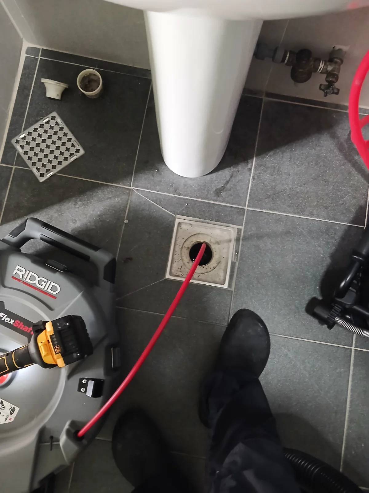

용인시 처인구 원삼면 하수구악취, 현장 도착 후 진단
경기도 용인시 처인구 원삼면에 위치한 회사에서 화장실 악취로 장기간 불편을 겪고 있다는 요청을 받고 내시경과 전문 배관 장비를 준비해 현장으로 이동했습니다.
화장실을 깨끗하게 청소해도 냄새가 반복된다면 변기나 소변기 표면의 문제가 아니라 바닥 유가의 봉수 상태, 배관 내부 오염, 배관 연결 구조 등을 함께 확인해야 합니다. 겉으로 보이는 곳에 탈취제나 세정제를 사용하는 것만으로는 배관 안에서 발생하는 악취를 해결하기 어렵습니다.
현장에서 냄새가 강하게 느껴지는 지점을 확인한 뒤 화장실 바닥 유가를 개방하고 배관 내시경을 투입했습니다. 내시경 화면에는 일반적인 비누 찌꺼기나 머리카락과 다른 단단한 결정 형태의 오염물이 배관 내부를 뒤덮고 있었습니다.
1단계: 증상 확인과 필요한 장비 작업
배관 내시경을 진입시키며 유가 하부와 연결 배관을 점검한 결과, 배관 내벽에 두꺼운 요석이 광범위하게 형성돼 있었습니다. 바닥 하수구 아래에서 소변기 배관에 주로 나타나는 요석이 발견됐다는 점이 일반적인 화장실악취 현장과 달랐습니다.
배관의 연결 방향을 추가로 확인하자 소변기에서 내려오는 배수관이 화장실 바닥 유가 하부의 하수배관에 연결된 구조였습니다. 소변기 배수는 일반 바닥 하수배관과 분리해 적합한 오수계통으로 연결하는 것이 일반적이지만, 이 현장에서는 두 계통이 연결돼 있었습니다.
그 결과 소변 성분이 바닥 배관으로 지속적으로 흘러들었고, 시간이 지나면서 유가 하부에 요석이 축적돼 강한 악취를 발생시킨 것으로 판단했습니다.

2단계: 원인 구간 처리와 정상 작동 확인
내시경으로 요석의 위치와 배관 상태를 확인한 뒤 리지드 샤프트 장비를 투입했습니다. 회전하는 샤프트 헤드로 배관 내벽에 단단하게 굳은 요석을 구간별로 분쇄했습니다.
분리된 요석과 오염물이 배관 안에 남지 않도록 전문 석션장비를 함께 사용해 제거했습니다. 작업 중에도 내시경 화면을 확인하면서 요석이 남아 있는 부분을 반복적으로 정비했습니다.
단순히 방향제나 약품으로 냄새를 가리는 방식이 아니라 배관 내부의 실제 오염 상태와 배관 연결 구조를 확인하고, 악취를 만들어내던 요석을 직접 제거하는 방식으로 작업했습니다.

작업 결과와 재발 방지 안내
화장실 바닥 유가 하부와 연결 배관에 쌓여 있던 요석을 제거하고 배관 내부 상태를 점검했습니다. 이번 현장은 단순한 청소 불량이나 일시적인 봉수 증발이 아니라 소변기 배수가 바닥 하수배관으로 합류하는 구조와 요석 축적이 함께 작용한 사례였습니다.
요석을 제거하면 현재 발생하는 악취를 줄이는 데 도움이 되지만, 동일한 배관 연결 구조를 계속 사용하면 소변 성분이 다시 유입돼 요석이 재발할 수 있습니다. 따라서 정기적으로 배관 내부를 점검하고 필요하면 소변기 배수계통과 바닥 하수배관의 연결 구조를 검토해 개선하는 것이 좋습니다.
신라건축설비는 용인시 처인구 원삼면을 비롯한 경기권과 서울 전 지역에서 화장실악취와 하수구악취의 원인을 전문적으로 진단합니다. 배관 내시경검사, 석션, 샤프트 배관스케일링과 배관세척을 현장 상태에 맞춰 운용하며, 단순 악취 제거부터 잘못된 배관 연결의 진단과 배관 보수·교체공사까지 자체적으로 대응합니다.
최종 조치: 바닥 유가를 개방해 배관 내시경으로 내부 구조와 요석 축적 상태를 확인했습니다. 유가 하부와 연결 배관에 쌓인 요석을 샤프트 작업으로 분쇄하고 석션장비로 오염물을 제거한 뒤 배관 내부 상태를 다시 점검했습니다.
현장 방문 전 확인하는 비용과 작업 범위
신라건축설비는 현장 증상과 배관 구조를 확인한 뒤 필요한 작업과 예상 비용을 안내합니다. 단순 관통으로 해결되는지, 배관내시경·석션·고압세척 또는 추가 장비가 필요한지는 현장 상태에 따라 달라집니다. 출장비와 야간 작업비, 추가 장비 비용이 발생할 수 있는 경우 작업 전에 먼저 설명하고 동의를 받은 범위에서 진행합니다.
업체를 선택할 때 확인할 사항
무조건적인 ‘0원’ 표현보다 실제 작업 범위, 추가 비용 조건, 사용 장비와 사후 대응 기준을 확인하는 것이 중요합니다. 해결되지 않았을 때의 비용 기준과 작업 후 동일 증상 발생 시 점검 범위를 사전에 문의해두면 불필요한 분쟁을 줄일 수 있습니다.
용인시 처인구 하수구악취 자주 묻는 질문
하수구 냄새 원인을 바로 찾을 수 있나요?
회사 화장실에서 청소를 반복해도 불쾌한 악취가 계속 발생했으며, 특히 화장실 바닥 유가 주변에서 냄새가 심하게 올라오는 상태였습니다.처럼 증상이 나타나더라도 원인은 현장마다 다를 수 있습니다. 장비와 배관 구조를 확인한 뒤 필요한 작업 범위를 안내합니다.
트랩 교체만으로 해결되나요?
작업 전 증상과 현장 여건을 확인해 예상 범위와 비용을 먼저 안내합니다. 변기 탈거, 장비 추가 투입 또는 공용배관 작업이 필요한 경우 고객 동의 없이 임의로 진행하지 않습니다.
재발하면 다시 점검받을 수 있나요?
완료 후 정상 작동을 함께 확인하고 작업 범위에 따른 사후 안내를 드립니다. 동일 증상이 반복되면 현장 기록을 기준으로 원인을 다시 점검합니다.
하수구악취 서울·경기 출동지역
신라건축설비는 용인시 처인구 원삼면 현장을 포함해 서울 25개 구와 경기도 31개 시·군의 배관 문제를 상담합니다. 현장 거리와 기사 배정 상황에 따라 출동 가능 여부를 먼저 안내드립니다.
서울 전 지역
강남구 · 강동구 · 강북구 · 강서구 · 관악구 · 광진구 · 구로구 · 금천구 · 노원구 · 도봉구 · 동대문구 · 동작구 · 마포구 · 서대문구 · 서초구 · 성동구 · 성북구 · 송파구 · 양천구 · 영등포구 · 용산구 · 은평구 · 종로구 · 중구 · 중랑구
경기도 주요 출동지역
수원시 · 용인시 · 고양시 · 화성시 · 성남시 · 부천시 · 남양주시 · 안산시 · 평택시 · 안양시 · 시흥시 · 파주시 · 김포시 · 의정부시 · 광주시 · 하남시 · 광명시 · 군포시 · 양주시 · 오산시 · 이천시 · 안성시 · 구리시 · 의왕시 · 포천시 · 양평군 · 여주시 · 동두천시 · 과천시 · 가평군 · 연천군